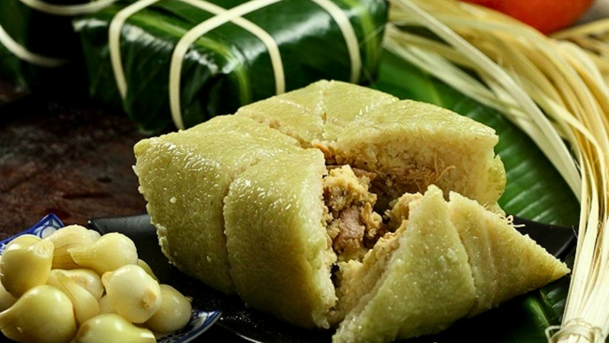
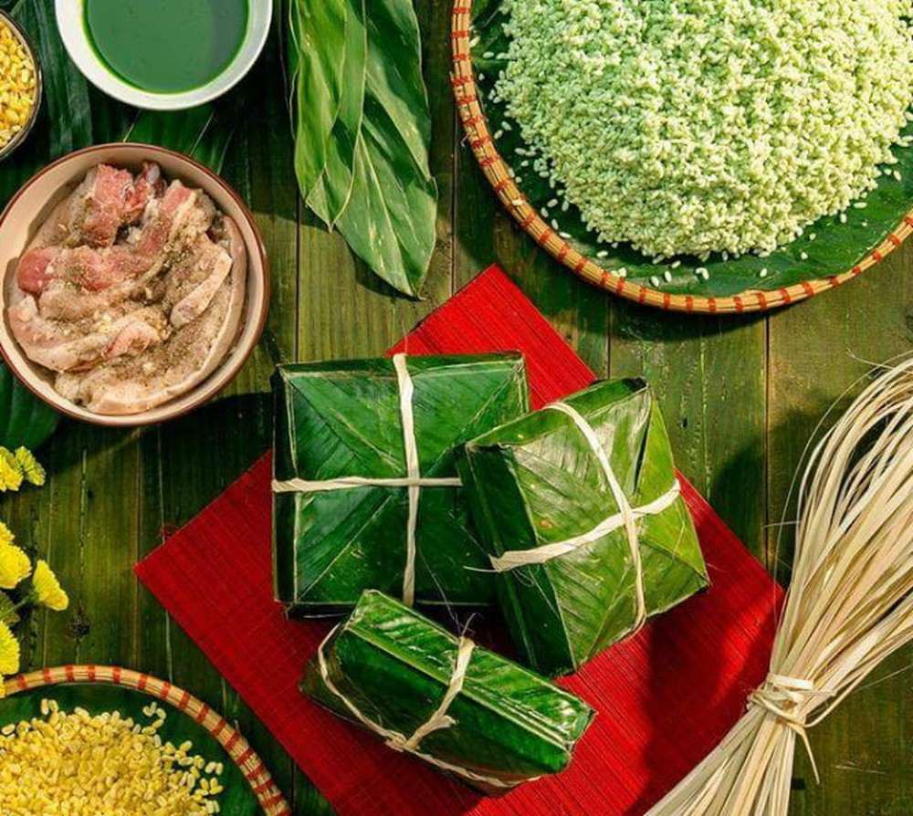
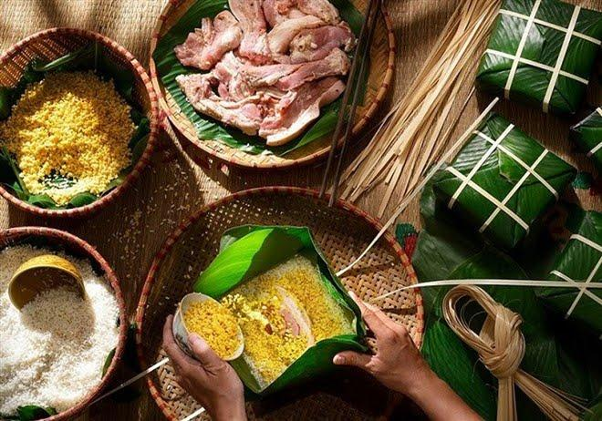
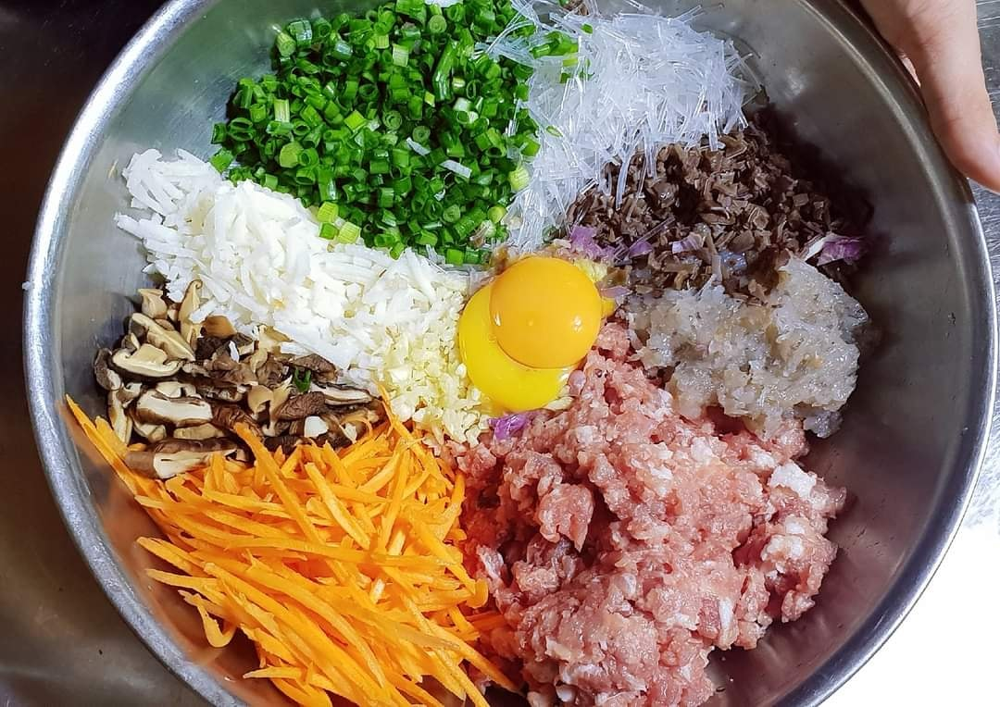
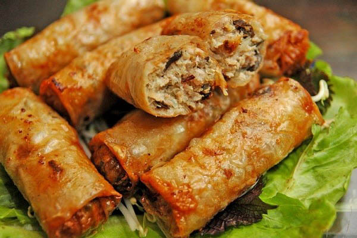
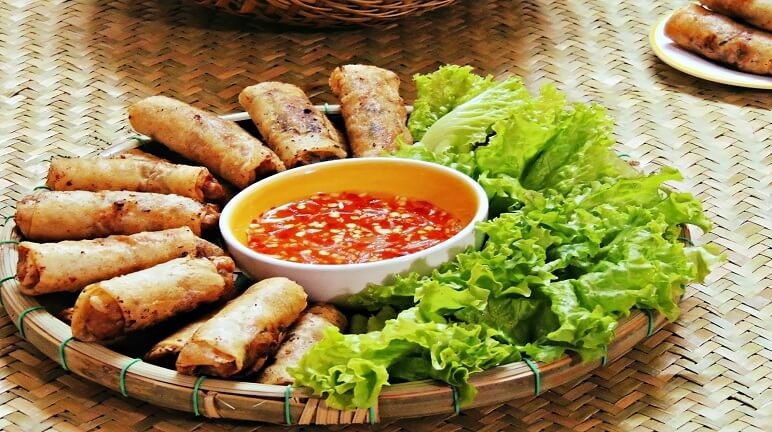
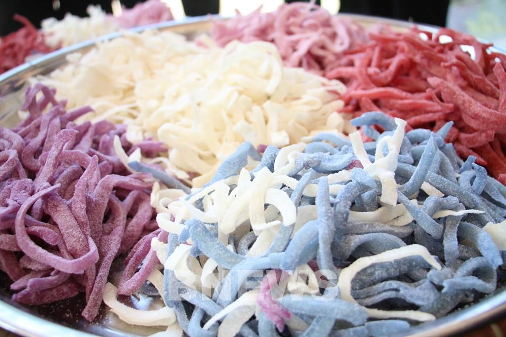
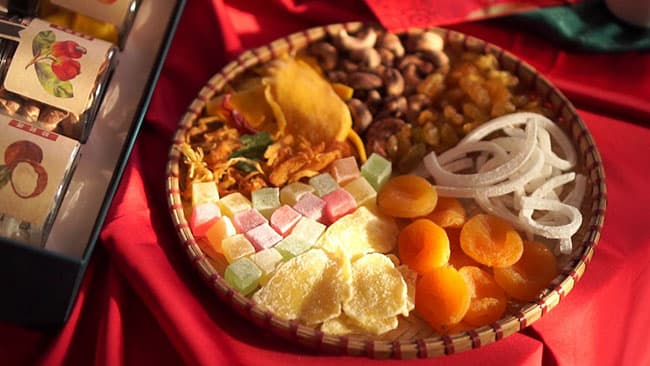
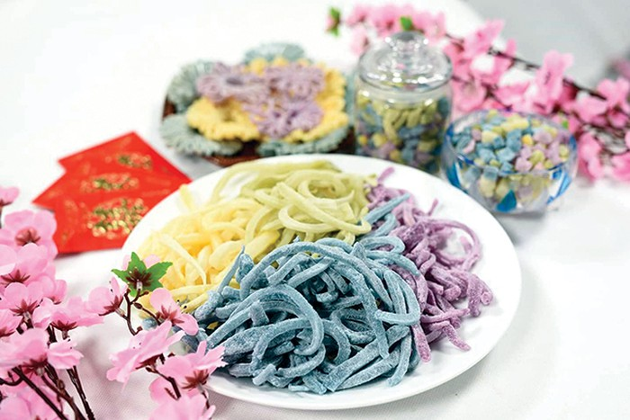

🌸 BÁO TƯỜNG ĐIỆN TỬ – MỪNG XUÂN 🌸
Ẩm thực
- Bánh Chưng: Bánh chưng được làm từ những nguyên liệu rất quen thuộc: gạo nếp, đậu xanh, thịt lợn, gói trong lá dong xanh và buộc bằng lạt tre. Bánh có hình vuông, nhân bên trong đậm đà, bên ngoài là lớp nếp dẻo thơm. Để có một chiếc bánh chưng ngon, người gói phải khéo tay và bánh được nấu suốt nhiều giờ liền. Không chỉ là món ăn, bánh chưng còn mang giá trị tinh thần sâu sắc. Những ngày giáp Tết, cả gia đình quây quần gói bánh, thức đêm canh nồi bánh chưng, chuyện trò rôm rả – đó là hình ảnh ấm áp, khó quên trong ký ức mỗi người con Việt Nam.



- Nem rán: Nem rán (hay nhiều nơi gọi là chả giò) là một trong những món ăn không thể thiếu trên mâm cỗ Tết của người Việt.Nem rán thường được làm từ bánh đa nem cuốn nhân gồm thịt lợn xay, mộc nhĩ, miến, trứng, cà rốt, hành… Tùy vùng mà gia giảm nguyên liệu: miền Bắc vị thanh, ít ngọt; miền Nam đôi khi thêm tôm, củ đậu, hơi ngọt nhẹ. Nem được cuốn chặt tay rồi rán ngập dầu cho vỏ giòn rụm, nhân bên trong mềm thơm.



- Mứt: Mứt Tết là một trong những món ăn truyền thống không thể thiếu trong ngày Tết cổ truyền của người Việt. Hũ mứt nhỏ đặt trên bàn tiếp khách không chỉ để ăn chơi mà còn mang ý nghĩa văn hóa sâu sắc. Mứt được làm từ nhiều nguyên liệu quen thuộc như dừa, gừng, sen, bí, tắc, me… Mỗi loại mứt có hương vị riêng: mứt dừa béo ngậy, mứt gừng cay ấm, mứt sen bùi thơm, mứt tắc chua ngọt dễ chịu. Những vị này hòa quyện với nhau, tượng trưng cho đủ đầy cung bậc cảm xúc trong năm mới..


